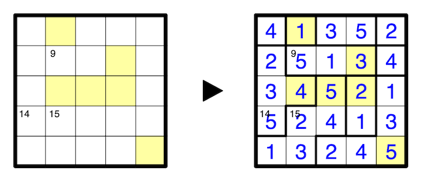

A number in the top left corner of a cell indicates the sum of the numbers in the orthogonally connected section of the region that cell belongs to. A colored cell indicates the size of the orthogonally connected section of the region that cell belongs to. All possible colored cells are given.
A 5x5 example is provided:
